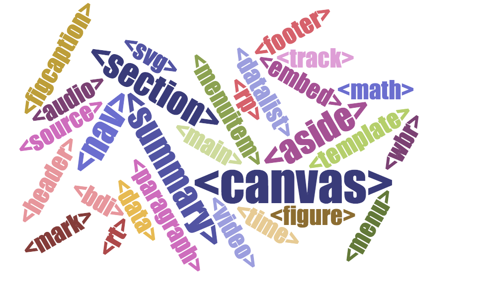

YAAP: Yet another AngularJS Presentation
Presented by Carlos Justiniano / @cjus
The changing web
- The advent of AJAX marked a web shift
- As a result sites became more responsive
- And increasingly complex web applications were being release
Handling front-end complexity
- Code moves into the front-end
- Developers face increased code complexity
- Enter: open-source front-end web frameworks with names like: Backbone, Ember, Knockout and Angular
AngualrJS
- Angular is loosely similar to many of the other frameworks that emerged to address the increasing demands of modern web development
- However, the similarities quickly give way to an amazing array of cleanly integrated and forward thinking features
- We'll cover many of Angular's features in this presentation
Why AngularJS?
- Embraces the spirit and potential of HTML5
- Offers features which are designed to work together
- Simplifies building modern web application
The original vision
Originally, Angular was designed as a way of enabling designers to use HTML markup to build application without having to know how to program
The core belief is that the best way to build user interfaces is by using declarative programming
In this approach, designers would be able to declare the behavior or components without knowing how the underlying behaviors were implemented
What can Angular do for you?
- Make it easier for you to reason about and build your web application - regardless of its size and complexity
- Applications which embrace Angular's features are inherently more testable
Demo code
Here's the structure of the basic angular enabled page we'll reuse in this presentation.
<!DOCTYPE html>
<html ng-app>
<head>
<title>Basic Angular App</title>
</head>
<body>
<script src="angular.min.js"></script>
<script src="app.js"></script>
</body>
</html>
Before we dig too deeply into code lets examine a few core concepts...
Key Concepts
Embracing best practices
- Angular borrows heavily from other successful frameworks
- Angular implements popular idioms while embracing HTML and other web standards
- It's more about embracing HTML
than wrestling with it
It's all about the markup
Declarative programming
Angular embraces HTML, by allowing designers and developers to describe what their HTML should do
HTML5: increasingly declarative
HTML5 data attribute
The HTML5 data attribute allows designers to specify additional properties and behaviors for HTML5 elements.
By querying the DOM, programmers can detect the presence of attributes to augment the element.
In this example, jQueryMobile uses the data-role and data-filter-placeholder attributes to determine how the list should be transformed
<ul data-role="listview" data-filter="true"
data-filter-placeholder="Search fruits..."
data-inset="true">
<li><a href="#">Apple</a></li>
<li><a href="#">Banana</a></li>
<li><a href="#">Cherry</a></li>
<li><a href="#">Cranberry</a></li>
<li><a href="#">Grape</a></li>
<li><a href="#">Orange</a></li>
</ul>
From the above to this...
To this:

Angular calls these directives
Earlier, we saw examples of directives when we looked at HTML for our basic angular app
<!DOCTYPE html>
<html ng-app>
<head>
<title>Basic Angular App</title>
</head>
<body>
<script src="angular.min.js"></script>
<script src="app.js"></script>
</body>
</html>
The ng-app in the markup is an Angular directives used to inform Angular where the Angular application begins
Source: /samplecode/BasicAngularApp
Extending HTML
With Angular we can define our own element as I did below with the ph-panel directive:
<ph-panel title="This is the panel's title">
<p>This is the panel's body.</p>
</ph-panel>
Here is the live code using the ph-panel directive:
This is the panel's body.
A few extra lines for good measure
A few extra lines for good measure
A few extra lines for good measure
A few extra lines for good measure
Source: /samplecode/ph-panel
Delivering on the promise of HTML
Data binding
Data binding
- Allows data to be bound to markup
- Updated in real-time as data changes
!doctype html>
<html ng-app>
<head>
</head>
<body>
<div>
<label>Name:</label>
<input type="text" ng-model="yourName"
placeholder="Enter a name here">
<hr>
<h1>Hello {{yourName}}!</h1>
</div>
<script src="js/angular.min.js"></script>
</body>
</html>
The ng-model in the <input> markup above is an Angular directive used to bind data an input control
Let's see a live example:
Hello {{yourName}}!
More fun with data binding
Expressions can be evaluated inside of mustache tags
<!DOCTYPE html>
<html ng-app>
<head>
<title>DataBinding</title>
</head>
<body>
<h2>Live text: {{ data.message }}</h2>
<h2>{{ "Hello " + "World!" }}</h2>
<h2>{{ 2 + 4}}</h2>
<label>Message: </label>
<input type="text" ng-model="data.message">
<script src="angular.min.js"></script>
</body>
</html>
Source: /samplecode/DataBinding
Live text: {{ data.message }}
{{ "Hello " + "World!" }}
{{ 2 + 4}}
Data binding and filters
- Angular enables data filtering
- Bound expressions can be further processed through a pipe of filters
- The format is: {{ expression | filter }}
<!DOCTYPE html>
<html ng-app>
<head>
<title>Data binding and Filters</title>
</head>
<body>
<p>1) Cost: {{ 11.99 + (11.99 * 0.33) | currency }}</p>
<p>2) Data: {{ 1288323623006 | date:'yyyy-MM-dd HH:mm:ss Z' }}</p>
<p>3) Lowercase: {{ "Buy Now!" | lowercase }}</p>
<p>4) Uppercase: {{ "Buy Now!" | uppercase }}</p>
<p>5) Here is some JSON data: {{ {'Boy':'Fred', 'Girl':'Jill'} | json }}</p>
<script src="angular.min.js"></script>
</body>
</html>
Source: /samplecode/DataBindingWithFilters
Here's the output
1) Cost: {{ 11.99 + (11.99 * 0.33) | currency }}
2) Data: {{ 1288323623006 | date:'yyyy-MM-dd HH:mm:ss Z' }}
3) Lowercase: {{ "Buy Now!" | lowercase }}
4) Uppercase: {{ "Buy Now!" | uppercase }}
5) Here is some JSON data: {{ {'Boy':'Fred', 'Girl':'Jill'} | json }}
Data binding with CSS classes
<!DOCTYPE html>
<html ng-app>
<head>
<title>DataBindingWithClasses</title>
<style>
.red { color: red; } .green { color: green; } .blue { color: blue; }
</style>
</head>
<body>
<h1 class="{{ data.classColor }}">Basic Angular App</h1>
<label>Title color: </label>
<input type="text" ng-model="data.classColor">
<script src="angular.min.js"></script>
</body>
</html>
Source: /samplecode/DataBindingWithClasses
Let's try it!
Data Binding with Classes
Scope
- A scope is a JavaScript object
- Angular assigns a default scope to each angular application
- Like plain old JS objects, it can hold data, functions, watch expressions and fire events
Here's a simple Scope
<!DOCTYPE html>
<html ng-app ng-init="data.message='Hello, from your application scope.';">
<head>
<title>Simple Scope</title>
</head>
<body>
<h2>Scope says: {{ data.message }}</h2>
<script src="angular.min.js"></script>
</body>
</html>
Source: /samplecode/SimpleScope
Understanding Scope
Controllers
Controllers and scope
Controllers and methods
Angular Modules
Dependency Injection
Services
Best practices
Pulling it altogether: Angular MVC
Angular support application separation of concerns using MVC and modules such as services and routers
- In Angular, the Model is implemented using the scope
- Views are simply HTML templates with declarative annotation and data interpolations
- And Controllers are just plain old JavaScript object
Testing Angular
- The Angular as its own test runner for Angular called Karma
- Karma executes Jasmine BDD style tests
- For end-to-end tests Angular has a tool called Protractor
Testing directives
Testing controllers
Testing services
End to end testing using Protractor
How does Angular work?
TODO: Angular life cycle
Angular and Friends
Google members have written a number of excellent tools which support AngularJs development
- Karma: A test runner for Angular
- Yeoman: A set of tools which provide code generation, package management and build support (tasks execution)
- Protractor: An end to end testing framework for Angular which uses Selenium and WebDriverJS
- Batarang: A chrome plugin which allows you to inspect Angular as it runs
Thinking about your application in terms of Angular
Breaking down your application
- Separate your app into modules, models, controllers, directives, and services
How large is Angular?
You might think all of Angular's features result in a large and bloated framework
Actually, it weighs in at only...
- 104K minified
- 38K minified and gzipped
- To put this in context, jQuery 2.1.1 is 84K minified
The Angular Story
- Created in 2008 and 2009 by Miško Hevery and Adam Abrons
- Goal: to build an online JSON storage service
- Business scrapped and code released as open source project
- At Google, Misko joined the Google Feedback project
- At one point Misko claimed he could rewrite the product in two weeks using Angular
- Google Feedback had 17,000 lines of code developed
- Using Angular, Misko reduce the code from 17,000 lines to 1500 lines of code
- This success lead to open sourcing the early Angular project
- External developers start to take notice of Angular
- Marc Jacobs from the Google DoubleClick team takes notice
- He decides to compare Angular and Google's own GWT during one of his team's sprints
- Angular proved easier to use
2013, the Angular team hosted an internal conference at Google offices
Initially, 50 people were expected to attend
197 attendees showed up
- Angular gained traction inside and outside of Google
- The Angular team compares Angular's emerging popularity relative to other popular frameworks
The team announced that by mid-2013 the popularity of Angular skyrocketed in comparison to other frameworks

A few Angular tidbits
Why is it called Angular?
Named after the HTML angled bracket
Why is the logo a shield with a letter "A" on it?
- Logo chosen because the shield resembles the HTML5
- Misko felt that the shield represents Angular shielding developers from the low-level differences among web browsers
Size of Core Team
By early 2014 Angular had 14 core members
The future of Angular
- ES6-based Lazy loading dependency injection
- Use of ES6 Object.observe
- Polyfills for features which are not natively supported on all web browsers
- Better support for mobile application development
The future of Angular (cont)
- Built-in offline support - so apps work completely offine
- AngularDart - Angular for Google's Dart programming language and platform
- Angular 2.0 includes support for emerging browser technologies such as web components and the shadow DOM Angular does this in cooperation with the Polymer project
- Improved debugging and instrumentation tools. Zone.js for improved stack traces, and diary.js for improved logging
Resources
Oh, and one last thing...
This presentation was built using HTML, CSS, JavaScript and uses RevealJS
... and of course it's powered by AngularJS